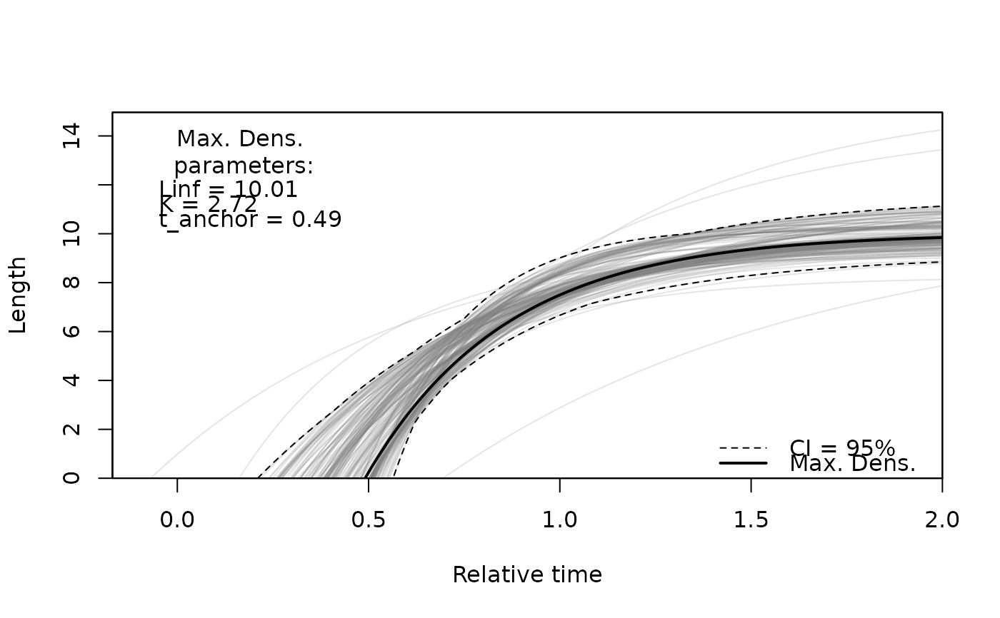
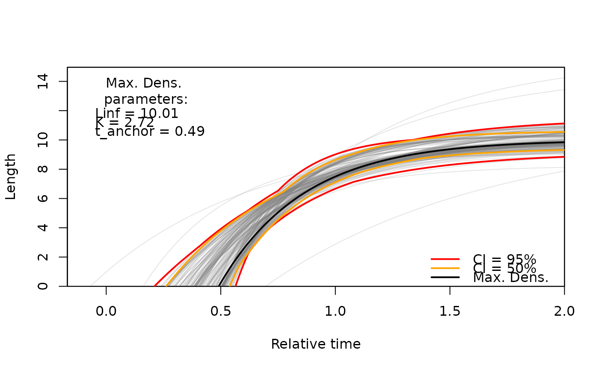
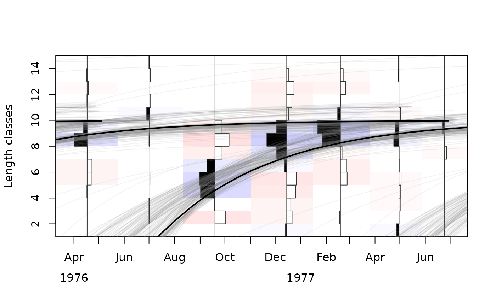

Plots the growth curves of all resamples of a bootstrapped ELEFAN fit (ELEFAN_GA_boot, ELEFAN_SA_boot) over relative time together with the confidence intervals and the growth curve with the maximum multivariate kernel density.
Usage
vbgfCI_time(
res,
CI = 95,
agemax = NULL,
add_legend = TRUE,
add_max_dens_legend = TRUE,
xlab = "Relative time",
ylab = "Length",
perm.col = adjustcolor("grey50", 0.1),
perm.lwd = 1,
ci.col = 1,
ci.lty = 2,
ci.lwd = 1,
maxd.col = 1,
maxd.lty = 1,
maxd.lwd = 2
)Arguments
- res
list of class `lfqBoot`
- CI
vector. Confidence interval levels to plot
- agemax
numeric. Maximum number of years to project.
- add_legend
logical. Should CI and max. density legend be added (Default: `add_legend = TRUE`).
- add_max_dens_legend
logical. Should maximum density line be added (Default: `add_max_dens_legend = TRUE`).
- xlab
Label for x-axis
- ylab
Label for y-axis
- perm.col
Color for each resample estimate line. See `?par`.
- perm.lwd
Line width for each resample estimate line. See `?par`.
- ci.col
Color for CI line. See `?par`.
- ci.lty
Line type for CI line. See `?par`.
- ci.lwd
Line width for CI line. See `?par`.
- maxd.col
Color for maximum density line. See `?par`.
- maxd.lty
Line type maximum density line. See `?par`.
- maxd.lwd
Line width maximum density line. See `?par`.
Value
plot and list containing: `limCI` - data.frame with CI limits by time, `inCi` - data.frame with logical values defining whether bootstrapping samples are within each of the defined CIs, `density` - the multivariate kernel density estimates for each sample, and `max_dens` is a list with the VBGF parameter combination having the maximum density estimate.
Examples
data(alba_boot)
CIinfo <- vbgfCI_time(
res = alba_boot,
agemax = 2, CI = 95,
perm.col = adjustcolor("grey50",0.2)
)

# plot more CI levels
CIinfo <- vbgfCI_time(
res = alba_boot,
agemax = 2, CI = c(95, 50),
ci.lty = 1, ci.lwd = 2, ci.col = c("red", "orange"),
perm.col = adjustcolor("grey50",0.2)
)

# using output in lfq plot (see ?plot.lfq)
data(alba)
alba <- lfqRestructure(alba, MA = 7)
plot(alba, Fname = "rcounts")
for(i in seq(nrow(alba_boot$bootRaw))){
x <- as.list(alba_boot$bootRaw[i,])
tmp <- lfqFitCurves(
lfq = alba, par = x,
col = adjustcolor("grey50",0.1), draw = TRUE, lty=1
)
}
tmp <- lfqFitCurves(lfq = alba, par = CIinfo$max_dens,
col = 1, draw = TRUE, lty=1, lwd=2
)
